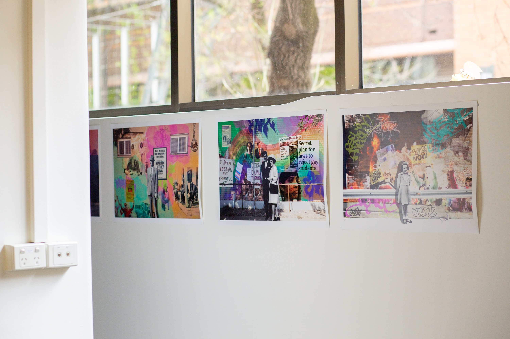

Untitled (2022)
Jordan Townrow
Digital Photomontage
In today's world we are having to face numerous humanitarian issues that are indiscriminate of society. The most prevalent common denominator of humanitarian issues is that even after centuries of dealing with such issues we are still contending with them in the 21st century.
In this series of photo montages, utilising different photo archives, newspaper articles and my own personal archive, I hope to address this common denominator specifically regarding race, gender equality, war, climate change and LGBTIQ+ equality on a national and global perspective. Furthermore by contradicting the black and white photographs against the colour images in the street art murals I intend to address the predicament that we are still having to navigate these humanitarian issues in the year 2022 and beyond.

'Untitled', 2022 (Detail), Image Courtesy the Artist